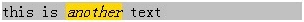

无。
Firefox 不支持 DOM 对象的 outerHTML innerText outerText 属性。
在 Firefox 中使用 outerHTML、innerText、outerText 属性会使脚本程序报错。
| Firefox |
|---|
outerHTML 最初是由 IE 浏览器实现的私有属性，详细内容请参见 MSDN 说明：outerHTML Property。
W3C 的 HTML5 规范草案中也新加入了这个属性，它描述的是元素本身以及它的内容。当用一个字符串设置 DOM 元素的这个属性时，字符串会被当作 HTML 代码来渲染并替换这个 DOM 元素。详细内容请参见 HTML5 草案说明：3.5.6 outerHTML。
目前，主流浏览器中，只有 Firefox 不支持 outerHTML 属性。
<script type="text/javascript"> window.onload = function() {
document.getElementById("one").outerHTML = "<div style='width:100px;height:100px;
background-color:silver;'></div>"; } </script> <p id="one"
style="background-color:gold;"> TEXT </p>
测试用例中，页面加载的时候会执行对 one 的 outerHTML 属性的赋值。
根据 HTML5 规范草案和 MSDN 说明，one 元素会被 outerHTML 属性的值替代，表达式右边的字符串会被当作 HTML 代码渲染。因此，金色背景的 TEXT 文本会被一个银色的正方形所替代。
在各浏览器下的截图：
| Firefox | IE6 IE7 IE8 Chrome Safari Opera |
|---|---|
可见，只有 Firefox 下不支持 outerHTML 属性。
innerText 最初是由 IE4.0 浏览器实现的私有属性，它描述的是元素的内容。当用一个字符串设置 DOM 元素的这个属性时，字符串会被当作文本替换 DOM 元素的原有内容。
详细内容请参见 MSDN 说明：innerText Property。
现有 W3C 标准中的没有定义这个属性。
虽然不是标准属性，但是大多浏览器都对它提供了支持，目前主流浏览器中只有 Firefox 不支持该属性。
<script type="text/javascript"> window.onload = function() { var ps =
document.getElementById("one"); ps.innerText = "<span>hi</span>"; }
</script> <p id="one" style="background:silver; width:300px;"> this is
<i style="width:100px; background-color:gold;">another</i> text </p>
测试用例中，页面加载的时候会执行对 one 的 innerText 属性的赋值。one 元素的内容应该被 innerText 的文本替代。
在各浏览器下的截图：
| Firefox | IE6 IE7 IE8 Chrome Safari Opera |
|---|---|
|  |
可见，只有 Firefox 下不支持 innerText 属性。
outerText 最初是由 IE4.0 浏览器实现的私有属性，它描述的是元素的内容。当用一个字符串设置 DOM 元素的这个属性时，字符串会被当作文本替换 DOM 元素的原有内容。
详细内容请参见 MSDN 说明：outerText Property。
现有 W3C 标准中的没有定义这个属性。
虽然不是标准属性，但是大多浏览器都对它提供了支持，目前主流浏览器中只有 Firefox 不支持该属性。
<script type="text/javascript"> window.onload = function() { var ps =
document.getElementById("one"); ps.outerText = "<span>hi</span>"; }
</script> <p id="one" style="background:silver; width:300px;"> this is
<i style="width:100px; background-color:gold;">another</i> text </p>
测试用例中，页面加载的时候会执行对 one 的 outerText 属性的赋值。one 元素的内容及其本身应该被 outerText 的文本替代。
在各浏览器下的截图：
| Firefox | IE6 IE7 IE8 Chrome Safari Opera |
|---|---|
可见，只有 Firefox 下不支持 outerText 属性。
在 Firefox 中，可通过扩展 HTMLElement 的原型 (prototype) 来实现相关属性。
if (typeof(HTMLElement) != "undefined") { HTMLElement.prototype.__defineSetter__("outerHTML",
function(s) { var r = this.ownerDocument.createRange(); r.setStartBefore(this); var df =
r.createContextualFragment(s); this.parentNode.replaceChild(df, this); return s; });
HTMLElement.prototype.__defineGetter__("outerHTML", function(){ var a = this.attributes, str =
"<" + this.tagName, i = 0; for (; i < a.length; i++) if (a[i].specified) str += " " +
a[i].name + '="' + a[i].value + '"'; if (!this.canHaveChildren) return str + " />"; return str +
">" + this.innerHTML + "</" + this.tagName + ">"; });
HTMLElement.prototype.__defineGetter__("canHaveChildren", function(){ return
!/^(area|base|basefont|col|frame|hr|img|br|input|isindex|link|meta|param)$/.test(this.tagName.toLowerCase()); }); }
if (!!document.getBoxObjectFor || window.mozInnerScreenX != null) {
HTMLElement.prototype.__defineSetter__("innerText", function(sText) { var parsedText =
document.createTextNode(sText); this.innerHTML = ""; this.appendChild(parsedText); return
parsedText; }); HTMLElement.prototype.__defineGetter__("innerText", function() { var r =
this.ownerDocument.createRange(); r.selectNodeContents(this); return r.toString(); }); }
if (!!document.getBoxObjectFor || window.mozInnerScreenX != null) {
HTMLElement.prototype.__defineSetter__("outerText", function(sText) { var parsedText =
document.createTextNode(sText); this.parentNode.replaceChild(parsedText, this); return parsedText;
}); HTMLElement.prototype.__defineGetter__("outerText", function() { var r =
this.ownerDocument.createRange(); r.selectNodeContents(this); return r.toString(); }); }
| 操作系统版本: | Windows 7 Ultimate build 7600 |
|---|---|
| 浏览器版本: |
IE6
IE7 IE8 Firefox 3.6.8 Chrome 6.0.472.11 dev Safari 5.0.1 Opera 10.60 |
| 测试页面: |
outerHTML.html
innerText.html outerText.html |
| 本文更新时间: | 2010-09-06 |
innerText outerText outerHTML